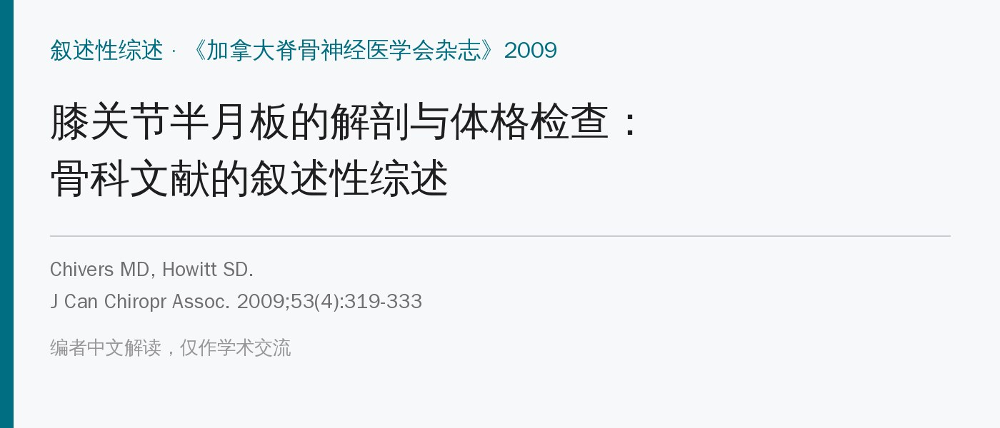
🔖原文信息（编者中文重排）
📚 文献信息
▪ Chivers MD, Howitt SD. Anatomy and physical examination of the knee menisci: a narrative review of the orthopedic literature. J Can Chiropr Assoc. 2009;53(4):319-333. PMID: 20037697; PMCID: PMC2796951
▪ 作者单位：加拿大纪念脊骨神经医学院（多伦多）
▪ 文章类型：叙述性综述，检索 MEDLINE（1966～2007）英文文献，以关节镜为金标准
半月板曾被当成“没用的退化结构”，现在知道它负责传递负荷、增加稳定、营养和润滑软骨、缓冲震荡、提供本体感觉。临床上查半月板的试验有一大堆——McMurray、Apley、关节线压痛，再到较新的 Thessaly、Ege、KKU……试验越多，往往说明没有一个真正可靠。这篇综述把解剖、病史和 9 种查体方法及其诊断准确性汇总在一起。
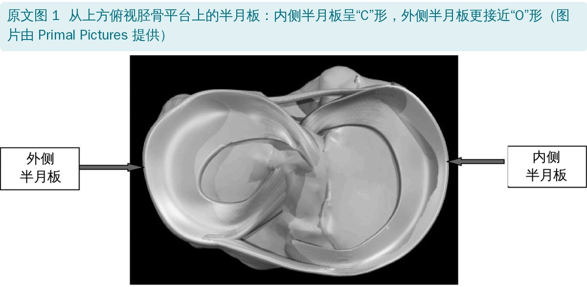
🔖原文图 1：俯视胫骨平台上的半月板
• 半月板是一对横截面呈楔形的半月形纤维软骨，上面凹、贴合股骨髁，下面平、贴合胫骨平台；内侧呈“C”形，外侧更接近“O”形
• 内侧半月板活动度小得多：与关节囊和内侧副韧带紧密相连；外侧半月板与关节囊连接松、不连外侧副韧带，后角被腘肌腱与后外侧关节囊隔开
• 胶原纤维以环形为主，产生“环向应力”；夹在其间的放射状纤维像“拉杆”一样增加刚度
• 伸膝时至少 50% 的轴向负荷经半月板传递，屈膝时高达 85%～90%
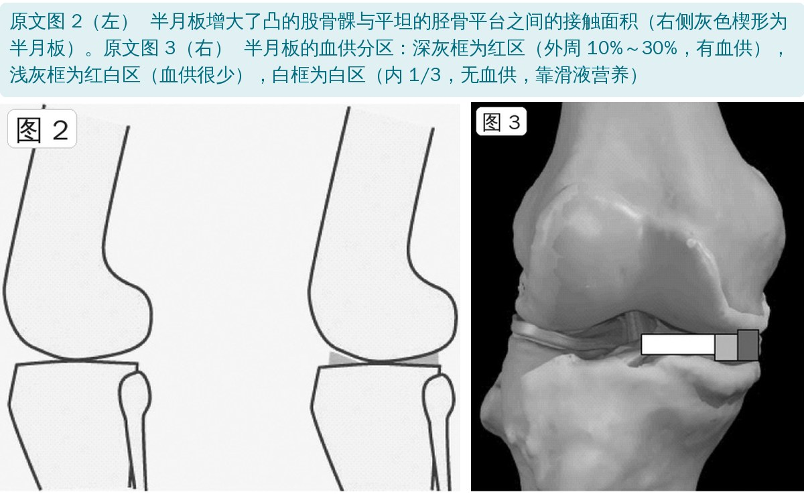
🔖原文图 2、3：接触面积与血供分区
血供来自膝上、膝下内外侧动脉形成的周围血管丛，只有外周 10%～30%（红区）有血供；中 1/3 红白区血供很少，内 1/3 白区完全没有、靠滑液扩散营养——这是半月板愈合差的最主要原因，也是按压关节线时手指要找的位置。
• 大多数损伤来自扭转 + 轴向负荷；屈膝时胫骨内旋，内侧半月板后角被拉向关节中心，可从关节囊附着处撕脱
• 内侧比外侧多见，后角比前角多见；橄榄球、棒球、篮球、足球中 75%～90% 的撕裂累及内侧
• 撕裂分型：纵行、斜行、水平裂、放射状、复杂型；桶柄状撕裂是最常见的纵行撕裂，通常可修补
• 运动员单纯撕裂多为一次性外伤；积液少、24～48 小时内慢慢出现；外周（有血供区）撕裂约 20% 出现关节积血；急性期常伴屈曲受限
• 慢性：运动后反复疼痛肿胀；绞锁、卡住、打软腿、对应侧关节线疼痛；退变性撕裂可以没有外伤
• 要问：疼痛部位和时长、活动改变、外伤、急性“啪”的一声、肿胀、打软腿、绞锁或卡住，以及髋、腰、大腿的伴随痛
• 鉴别：膝骨关节炎、骨软骨缺损、交叉或侧副韧带损伤、髌骨脱位、滑膜皱襞、关节囊损伤、肌肉拉伤；一定要排除血管损伤
检索 MEDLINE（1966～2007），MeSH 词“knee”“knee injury”“meniscus”分别与“physical examination”“diagnosis”“sensitivity”“specificity”“accuracy”等组合，补充相关文献的参考文献，只纳入英文文献；与磁共振对照的研究被排除，所有敏感度、特异度、预测值都以关节镜为金标准。没有正式的质量评价和合并分析，属于叙述性综述。
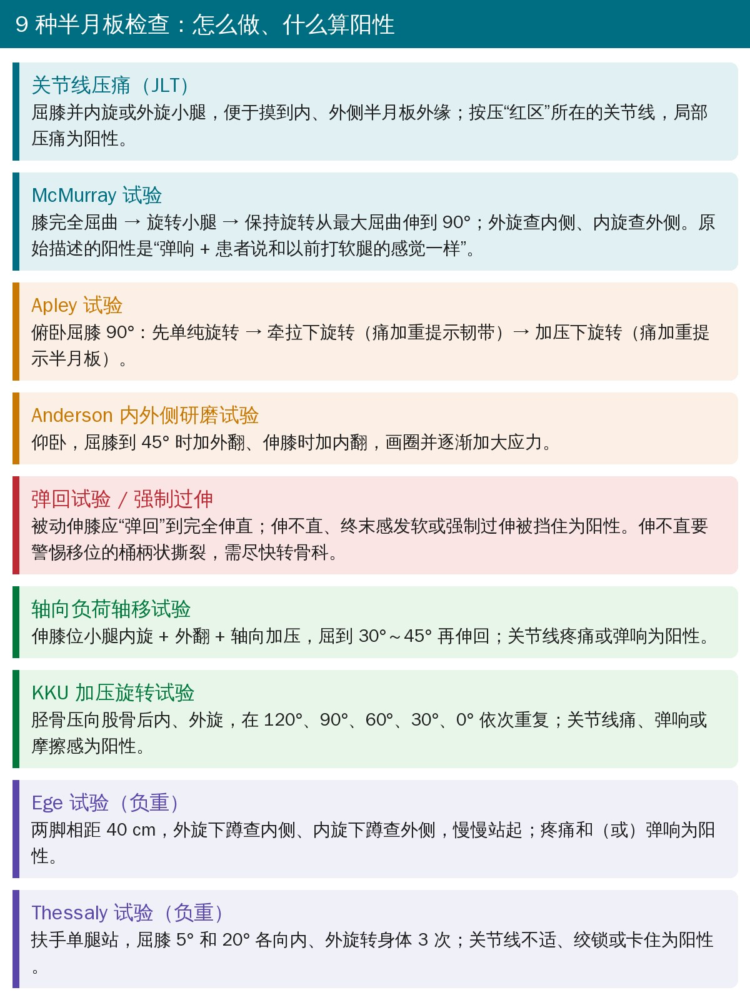
🔖9 种半月板检查的操作与阳性判断（编者根据原文整理）
最基本的检查。屈膝并内旋或外旋小腿，便于摸到内、外侧半月板的外缘，用手指按压“红区”所在的关节线。Muellner 认为局部关节线压痛是半月板撕裂最重要的体征。
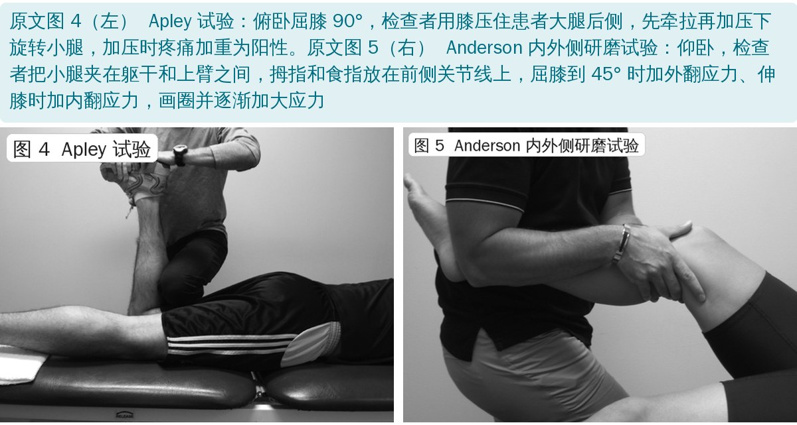
🔖原文图 4、5：Apley 试验、Anderson 研磨试验
• Apley（1947）：俯卧，检查者用膝压住患者大腿后侧，屈膝 90° → 单纯外旋看痛不痛 → 牵拉下旋转（痛加重提示“旋转扭伤”）→ 加压下旋转，加压时疼痛加重 = 半月板损伤
• Anderson（1986）：仰卧，检查者把小腿夹在躯干和上臂之间，拇指、食指放在前侧关节线；屈膝到 45° 时加外翻、伸膝时加内翻，画圈并逐圈加大应力
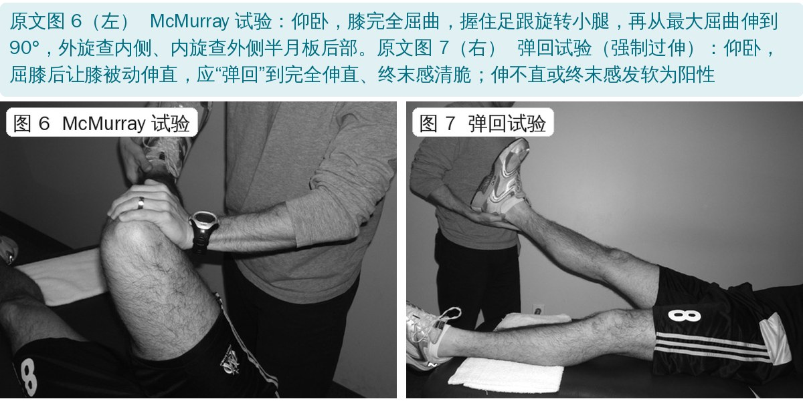
🔖原文图 6、7：McMurray 试验、弹回试验
• McMurray（1940）：仰卧，膝完全屈曲到足跟接近臀部，握足跟、以前臂为杠杆旋转小腿；保持旋转从最大屈曲伸到 90°，外旋查内侧、内旋查外侧半月板后部
• 原始描述的阳性：弹响 + 患者说“和以前打软腿时的感觉一样”；正常但松弛的半月板也可弹响，但不痛
• 弹回试验：仰卧，屈膝后让膝被动伸直，应“弹回”到完全伸直、终末感清脆；伸不直或终末感发软提示撕裂碎片、游离体或积液
• 伸不直要警惕移位的桶柄状撕裂，需要尽快转骨科；改良法有 Oni 的“膝猛伸试验”和 Shybut 的强制过伸
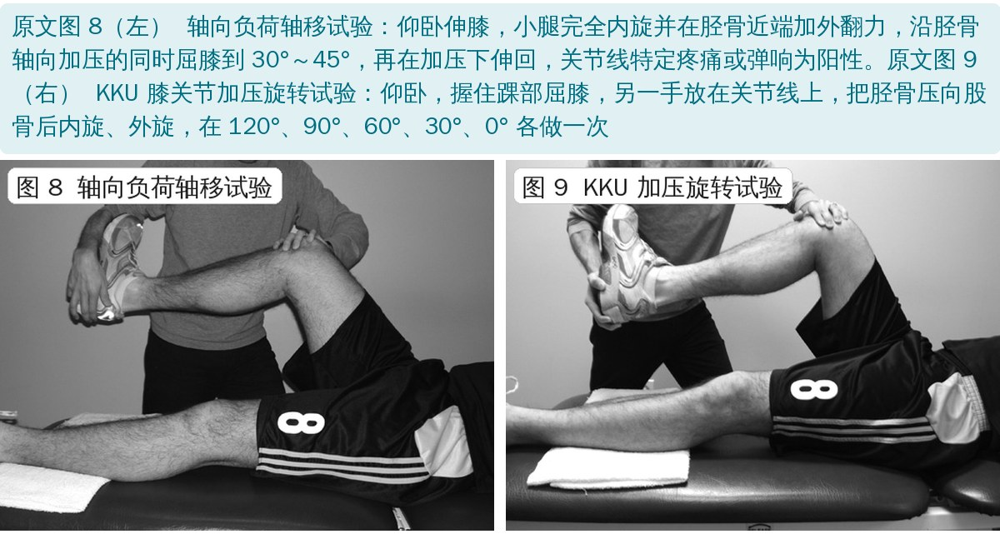
🔖原文图 8、9：轴向负荷轴移试验、KKU 加压旋转试验
• 轴向负荷轴移（Kurosaka 1999，由前交叉韧带的轴移试验改良）：仰卧伸膝，小腿完全内旋 + 胫骨近端外翻 + 轴向加压，屈到 30°～45° 后再在加压下伸回；关节线特定疼痛或弹响为阳性
• KKU（Surachai 2007）：仰卧，握踝屈膝，另一手放关节线，把胫骨压向股骨后内、外旋，在 120°、90°、60°、30°、0° 依次重复；关节线痛、弹响或摩擦感为阳性
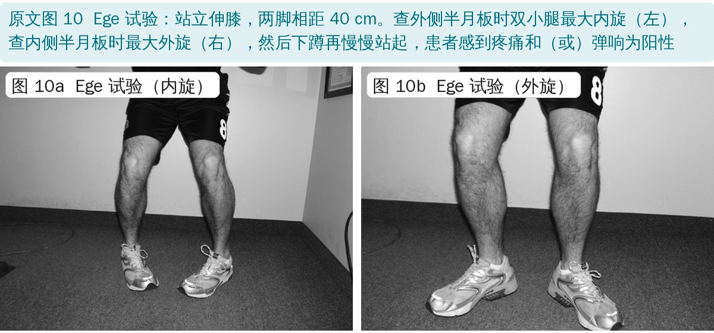
🔖原文图 10：Ege 试验
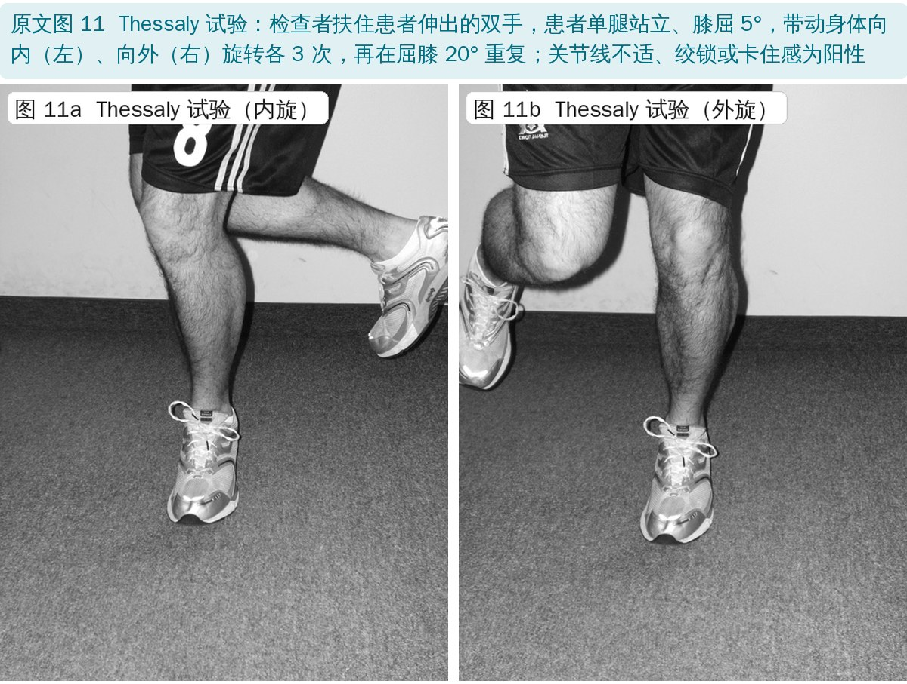
🔖原文图 11：Thessaly 试验
• Ege（Akseki 2005）：站立伸膝、两脚相距 40 cm；外旋下蹲查内侧，内旋下蹲查外侧，再慢慢站起；疼痛和（或）弹响为阳性
• Thessaly（Karachalios 2005）：检查者扶住患者伸出的双手，单腿站立、屈膝 5°，带动身体内、外旋各 3 次，再在屈膝 20° 重复；关节线不适、绞锁或卡住为阳性
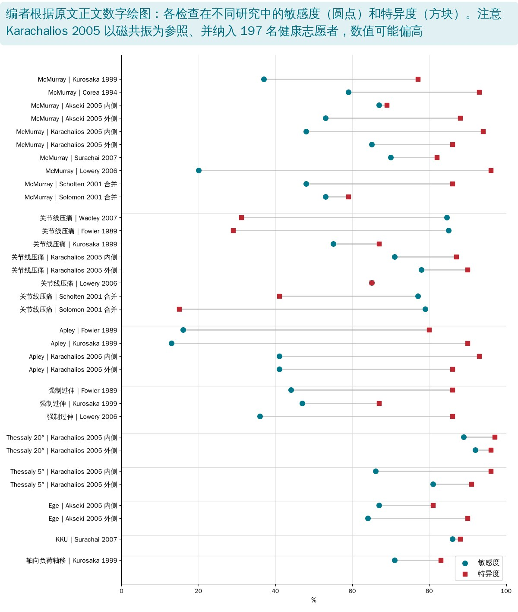
🔖各检查在不同研究中的敏感度和特异度（编者根据原文数字绘图）
• McMurray：研究间差别极大，敏感度 20%～70%、特异度 59%～96%；Scholten 合并 11 项研究敏感度 48%、特异度 86%，是唯一阳性预测值较好的检查。差异主要来自阳性标准不同（只算“弹响”还是“疼痛”也算）
• 关节线压痛：敏感度较高（多在 55%～85%）、特异度普遍很低（合并 41%，Solomon 只有 15%）；合并前交叉韧带撕裂时既不敏感也不特异
• Apley：敏感度很低（13%～41%），特异度 80%～93%
• 强制过伸：敏感度 36%～47%，特异度 67%～86%；原始弹回试验和膝猛伸试验都没有准确性研究
• Anderson 研磨：只报告了在 100 例撕裂中 68% 阳性，没有敏感度和特异度
• 新试验：Thessaly 20° 敏感度 89%～92%、特异度 96%～97%；KKU 86% / 88%；轴向负荷轴移敏感度 71%（同研究中最高）、特异度 83%；Ege 敏感度 64%～67%、特异度 81%～90%——都只有原作者的单项研究
• 合并前交叉韧带损伤时，所有检查都变差：如 Thessaly 20° 降到敏感度 80%、特异度 91%
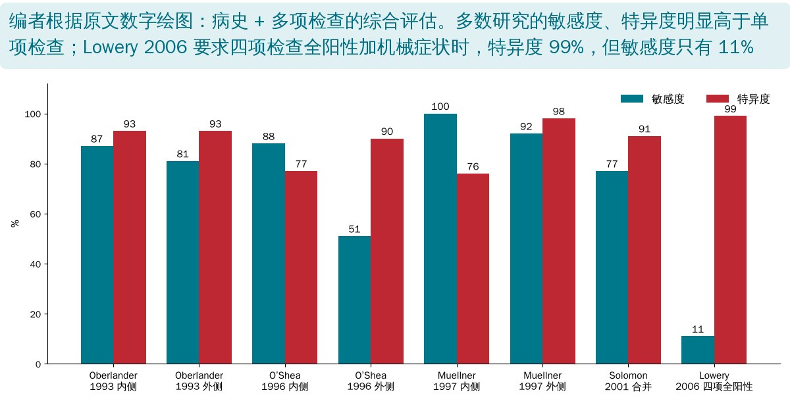
🔖综合检查的敏感度和特异度（编者根据原文数字绘图）
• 病史 + 多项检查的综合评估明显好于任何单项：Muellner 在运动员中内侧敏感度 100%、外侧 92%，Solomon 合并敏感度 77%、特异度 91%
• Oberlander：单一病变时诊断正确率 72%，病变越多越不准（总体 56%）
• Lowery：机械症状 + 四项检查全阳性时特异度 99%、阳性预测值 92%，但敏感度只有 11%；阳性项越多，阳性预测值越高；合并前交叉韧带损伤时阳性预测值降到 67%
• 叙述性综述：只检索了 MEDLINE 英文文献，没有质量评价和统一的合并分析，研究之间直接摆数字比较
• 新试验的数字最漂亮，但证据最薄：Thessaly、Ege、KKU、轴向负荷轴移都只有发明者自己的一项研究，作者也承认“尚未经过严格检验”
• 谱偏倚：Thessaly 的研究把 213 名疑似患者和 197 名健康志愿者放在一起算，特异度会被抬高；而且以磁共振为参照（与本文的排除标准相矛盾）
• 验证偏倚：Lowery 的 635 膝中只有 209 膝做了关节镜；大多数研究只纳入准备做关节镜的人，阳性率高，预测值不能直接搬到门诊
• 阳性标准不统一：同一个 McMurray，有人只算弹响，有人疼痛也算，敏感度和特异度此消彼长
• 检查者经验、损伤部位和严重程度都会影响结果；文中多数数值没有置信区间
• KKU 的敏感度算不出来：正文说 KKU 在 51 个撕裂中 46 个阳性，46/51 = 90%，却报告敏感度 86%；McMurray 39/51 = 76%，但前文引同一研究时 McMurray 敏感度是 70%
• “两项都阳性敏感度升到 90%”不可能：两项都阳性只有 35 例，35/51 = 69%；要求“同时阳性”只会让敏感度下降，不会升高
• 准确度超出范围：Oberlander 外侧半月板敏感度 81%、特异度 93%，诊断准确度却写成 95%——准确度是敏感度和特异度的加权平均，不可能高于两者
• Muellner 内侧人数对不上：第 1 组共 57 人，内侧撕裂 44 + 正常 17 = 61；外侧 13 + 44 = 57 是对的
• Ege 与关节线压痛的比较自相矛盾：先说关节线压痛对外侧撕裂的特异度更高（80% vs 44%），后面又说 Ege 是内、外侧都最特异的检查，且 Ege 外侧特异度报告为 90%
• 违反自己的排除标准：方法说排除了与磁共振对照的研究，但 Karachalios（Thessaly、Apley 等大量数据）恰恰以磁共振为参照，作者自己在 Apley 一节也注明了
• “阳性率”当成“准确度”：Anderson 研究只纳入有撕裂的 100 例，McMurray 58% 阳性、研磨试验 68% 阳性只能算敏感度，原文却说“确立了诊断准确度”“准确度 68%”
• LR 理解错误：Solomon 的 LR 是似然比，原文写成“logical regression（逻辑回归）”，并解释为“阴性结果更可能”；实际 LR+ 0.9、LR− 1.1 意思是关节线压痛几乎不改变患病概率
• Fowler 研究人数不一：一处写 161 例连续患者，另一处写 165 膝
• 引用错误：KKU 操作标注文献 26（实为 McMurray 原文），应为 27；Oni 的膝猛伸试验标注 27，应为 30；Solomon 的综合检查数据标注 37（Scholten），应为 18
• 小错：“sixty to eight percent”应为 60%～80%；膝关节“20° of freedom of motion”说法不通；Arnoczky 拼作 Anorczky；Surachai / Sarachai、Solomon / Solomen 拼写前后不一；法文摘要期刊名写成 JACC
• 不要靠单个试验下结论：病史（扭伤机制、绞锁卡住、关节线痛、迟发积液）+ 多项检查组合，比任何单项都可靠
• 作者建议至少做 McMurray + 关节线压痛；McMurray 阳性更有“确诊”价值，关节线压痛阴性的排除价值也有限
• Thessaly 可作为筛查，但目前数据来自单个研究且混入健康志愿者，别把 90% 以上的数字当真
• 合并前交叉韧带损伤时，所有检查都打折扣，要更依赖影像
• 膝伸不直、弹回试验阳性要警惕移位的桶柄状撕裂，尽快转诊
• 是否需要进一步影像或专科转诊，最终取决于症状严重程度和临床怀疑程度；关节镜仍是金标准
| 检查 | 研究 | 敏感度 | 特异度 | 准确度 / 其他 |
|---|---|---|---|---|
| McMurray | Fowler 1989 | — | 95% | 161 例 |
| McMurray | Evans 1993（内侧“咚”声） | 16% | 98% | 阳性预测值 83%；外侧阳性预测值 29% |
| McMurray | Corea 1994 | 59% | 93% | 阳性预测值 83% |
| McMurray | Kurosaka 1999 | 37% | 77% | 准确度 45% |
| McMurray | Akseki 2005 内侧 / 外侧 | 67% / 53% | 69% / 88% | 准确度 69% / 82% |
| McMurray | Karachalios 2005 内侧 / 外侧 / 合并 ACL | 48% / 65% / 45% | 94% / 86% / 76% | 准确度 78% / 84% / 74% |
| McMurray | Surachai 2007 | 70% | 82% | 准确度 73% |
| McMurray | Lowery 2006 | 20% | 96% | 阳性预测值 84% |
| McMurray | Scholten 2001（合并） | 48% | 86% | 11 项研究 |
| McMurray | Solomon 2001（合并） | 53% | 59% | |
| 关节线压痛 | Wadley 2007 | 84.6% | 31.2% | 阳性预测值 60%；κ = 0.48 |
| 关节线压痛 | Rose 2006 外侧 | 95% | 93% | 准确度 93% |
| 关节线压痛 | Eren 2003 外侧 | 89% | 97% | 准确度 96% |
| 关节线压痛 | Fowler 1989 | 85% | 29% | 165 膝 |
| 关节线压痛 | Kurosaka 1999 | 55% | 67% | 准确度 57% |
| 关节线压痛 | Karachalios 2005 内侧 / 外侧 / 合并 ACL | 71% / 78% / 65% | 87% / 90% / 80% | 准确度 81% / 89% / 80% |
| 关节线压痛 | Lowery 2006 | 65% | 65% | 阳性预测值 55% |
| 关节线压痛 | Scholten 2001（合并） | 77% | 41% | 9 项研究 |
| 关节线压痛 | Solomon 2001（合并） | 79% | 15% | LR+ 0.9，LR− 1.1 |
| Apley | Fowler 1989 | 16% | 80% | |
| Apley | Kurosaka 1999 | 13% | 90% | 准确度 28% |
| Apley | Karachalios 2005 内侧 / 外侧 / 合并 ACL | 41% / 41% / 20% | 93% / 86% / 84% | 准确度 75% / 82% / 59% |
| 强制过伸 | Fowler 1989 | 44% | 86% | |
| 强制过伸 | Kurosaka 1999 | 47% | 67% | 准确度 51% |
| 强制过伸 | Lowery 2006 | 36% | 86% | 阳性预测值 73% |
| Anderson 研磨 | Anderson 1986 | — | — | 100 例撕裂中 68% 阳性 |
| Thessaly 5° | Karachalios 2005 内侧 / 外侧 / 合并 ACL | 66% / 81% / 65% | 96% / 91% / 80% | 准确度 86% / 90% / 80% |
| Thessaly 20° | Karachalios 2005 内侧 / 外侧 / 合并 ACL | 89% / 92% / 80% | 97% / 96% / 91% | 准确度 94% / 96% / 90% |
| Ege | Akseki 2005 内侧 / 外侧 | 67% / 64% | 81% / 90% | 准确度 71% / 84%；内侧阳性预测值 86% |
| KKU | Surachai 2007 | 86% | 88% | 准确度 87% |
| 轴向负荷轴移 | Kurosaka 1999 | 71% | 83% | 160 膝，68% 慢性 ACL 缺失 |
| 综合检查 | Oberlander 1993 内侧 / 外侧 | 87% / 81% | 93% / 93% | 准确度 90% / 95% |
| 综合检查 | O’Shea 1996 内侧 / 外侧 | 88% / 51% | 77% / 90% | 准确度 82% / 78% |
| 综合检查 | Muellner 1997 内侧 / 外侧 | 100% / 92% | 76% / 98% | 准确度 93% / 96% |
| 综合检查 | Solomon 2001（合并） | 77% | 91% | 5 项研究 |
| 综合检查 | Lowery 2006（四项全阳性 + 机械症状） | 11% | 99% | 阳性预测值 92% |
ACL：前交叉韧带。数值均照录原文正文，原文中前后矛盾之处见上文“原文里对不上的地方”。
欢迎关注骨科康复小黄公众号，获取更多物理治疗的专业知识！
📄参考文献：
Chivers MD, Howitt SD. Anatomy and physical examination of the knee menisci: a narrative review of the orthopedic literature. J Can Chiropr Assoc. 2009;53(4):319-333. PMID: 20037697
原文版权归加拿大脊骨神经医学会杂志（© JCCA 2009）所有，未标注开放许可协议；原文图 1、图 3 的解剖图由 Primal Pictures 提供。本文为学术交流用的中文解读：原文图 1 的英文标签改为中文，图 2～11 引自原文并配中文图注，其余图表为编者根据原文数字整理绘制。如有侵权请联系删除。